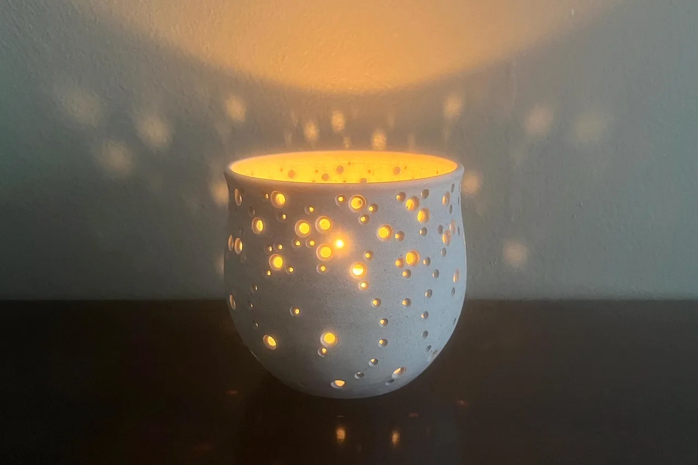
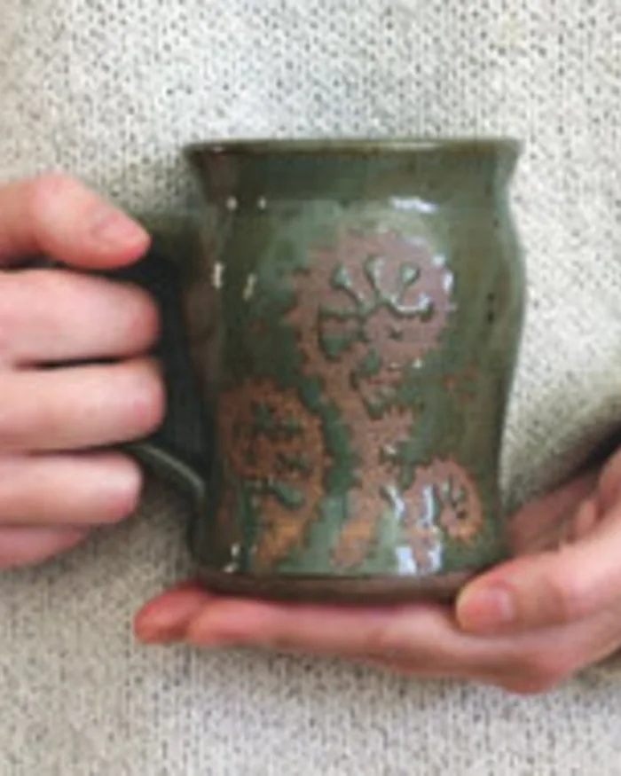
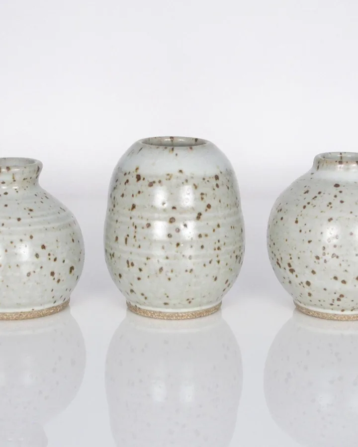
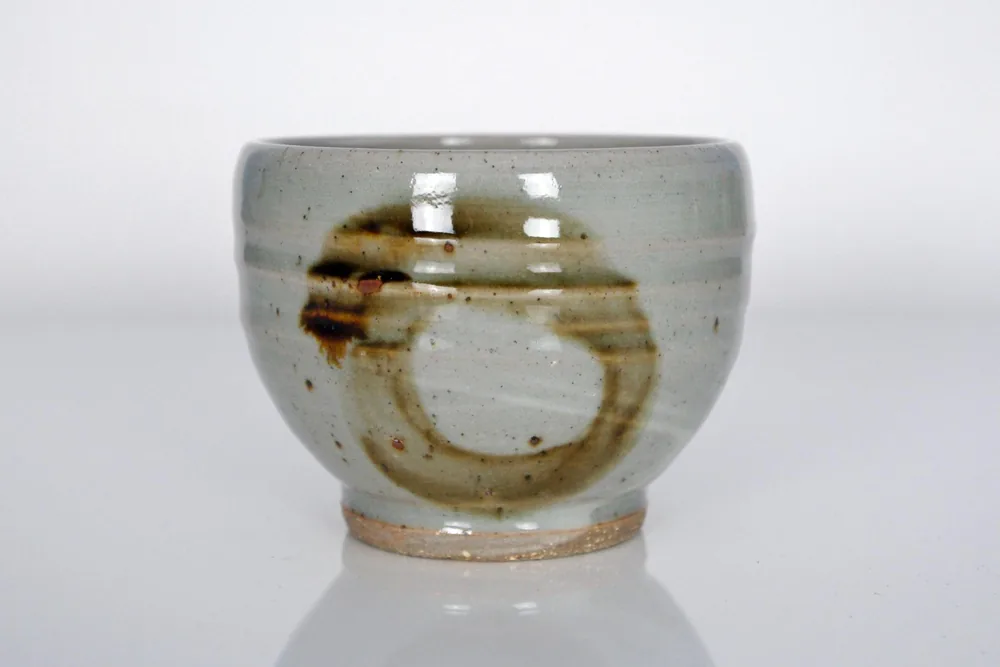
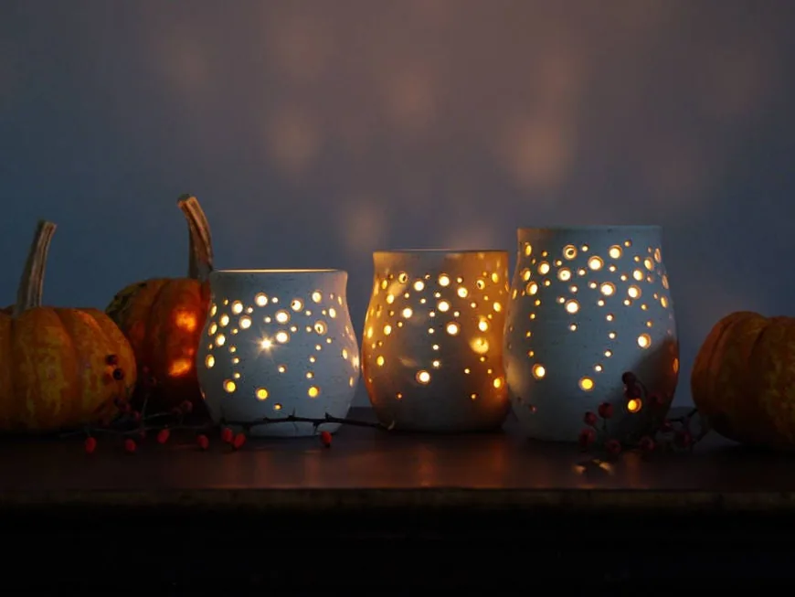
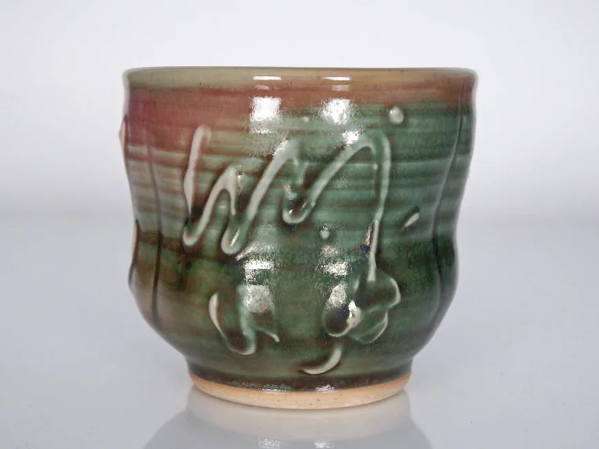
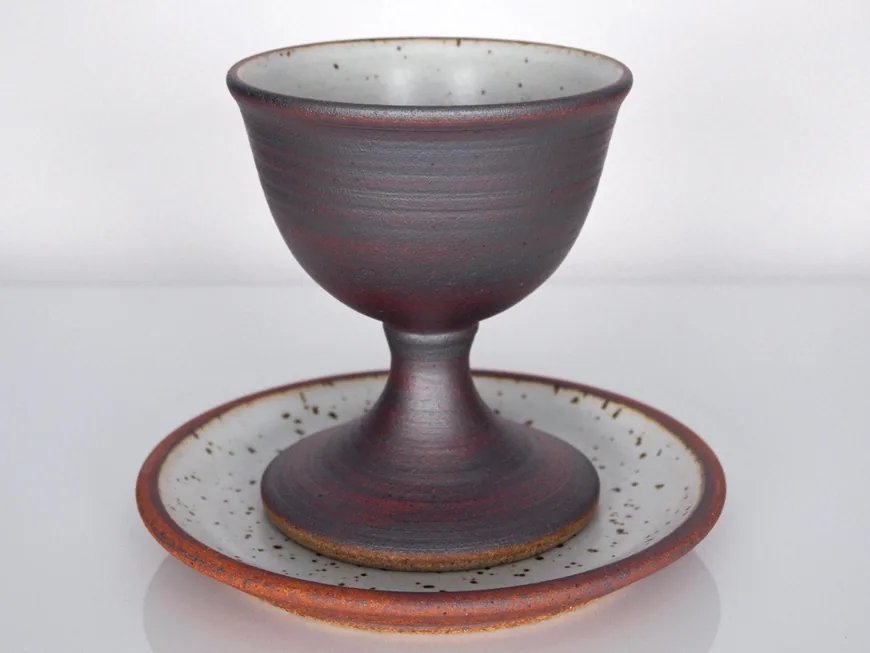

Contemplative design
Shaped by lingering on the details of the natural world, Japanese ceramics and Gaudí’s architecture.

Handmade in western New York
Celebratory ceramics, combining function & beauty

Meet the Artist
Owner & artist of Naomi Anita
Hello and welcome to my pottery shop! I make celebratory ceramics combining function and beauty, finely crafted from stoneware and porcelain in western New York and southern California, where I’m a graduate student.
Ceramics • Spirituality · 📍Western New York
Our story

01 How it started
I first fell in love with clay when I was a little kid: in the summers, my grandmother would take my cousins and me down to the local creek to play, and we’d spend hours chasing water-striders, picking flowers, and hunting for fossils. I’d often dig up the brown clay silt from the creekbed and fashion little pots, baking them in the sun.
Many years later, I took a few college courses in ceramics and worked with stoneware for the first time. I was hooked! I spent the next 8 years as a teaching assistant and studio technician in the same ceramics program: teaching students, firing kilns, making clay and glaze from scratch, and learning as much as I could from my mentor. Thanks to that space and the support of so many, I realized that, yes, an artist’s life was possible!
I’m now in seminary, pursuing my Master’s degree in Theology. I love linking my art-making with theological reflection, and designing liturgical ware in reflection upon biblical texts. Thank you for sharing in my journey and in the work of my hands.
— Naomi
02 Where & how it’s made
My pots are very tactile, very much the work of my hands. I pay close attention to detail and look for balance: graceful curves and an elegant form and weight.

03 What makes it special
Shaped by lingering on the details of the natural world, Japanese ceramics and Gaudí’s architecture.
Functional pieces for the table, the tea ritual and the home.
Chalices, patens and Communion sets made in reflection upon biblical texts.
Reviews
What we make
Every piece is made by my hands. Here’s what you’ll find in the shop.

“Falling Stars” candleholders that scatter tiny points of light.

Yunomi, chawan and matcha bowls, bud vases and yarn bowls.

Handmade chalices and patens for churches, weddings and travel.
Everything is sold through the online shop, with secure checkout and buyer protection.
Stay in the loop
Sign up to be the first to know about sales and new products.
You’re in! 🎉
Continue to the shopEvery piece is thrown and finished by hand. Thank you for sharing in my journey and in the work of my hands.
Visit the shop